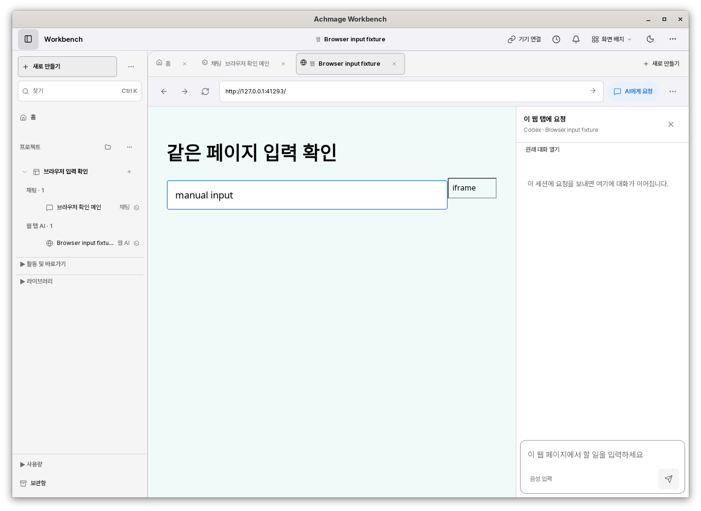
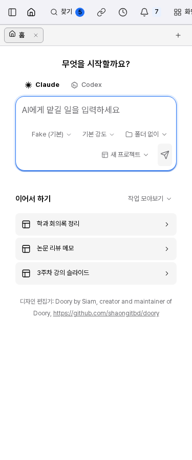
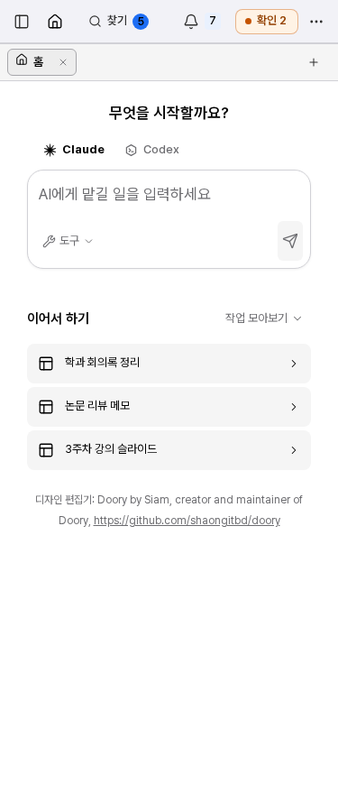
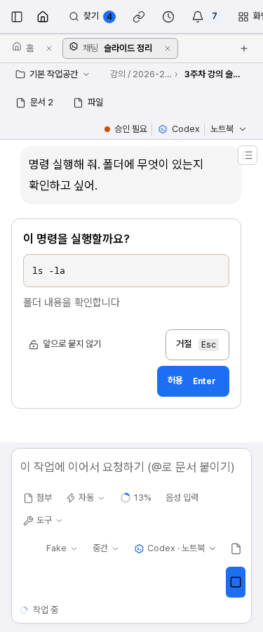
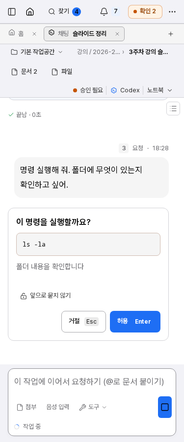
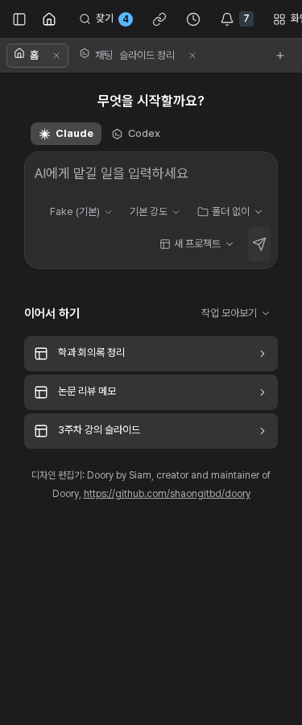
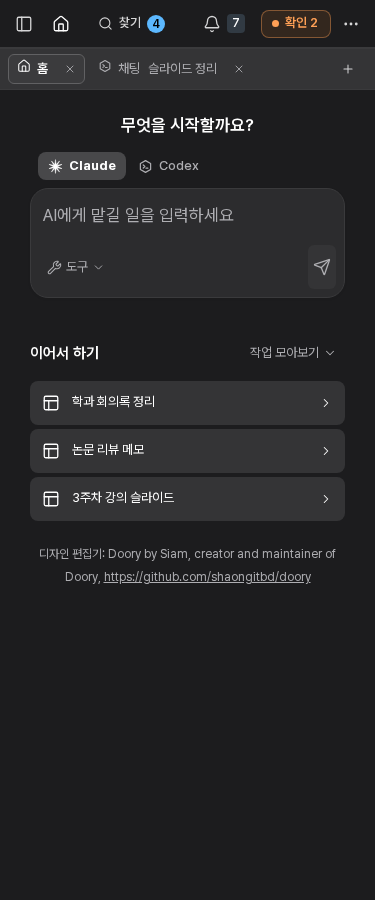
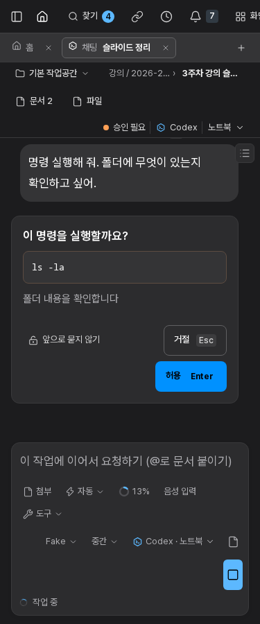
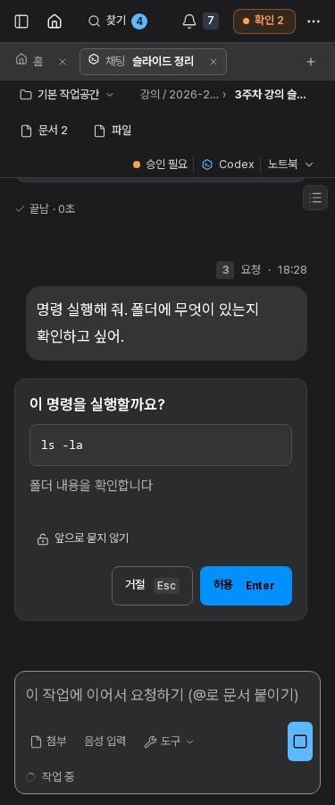

Workbench · HIG 마감
Apple HIG 기반의 기존 구현을 Hallmark·Impeccable 기준으로 마감했습니다. 프로젝트·문서·채팅의 구분과 Pretendard를 유지하며 좁은 화면의 메뉴와 입력 도구를 정리했습니다.
아래는 실제 프론트엔드와 임시 데이터로 캡처한 화면입니다. 화면용 대화는 견본입니다. 별도로 실행한 실제 Codex 웹 입력·메인 동시 요청 증거는 실행 기록에 구분했습니다. 설치본 배포 화면은 아닙니다.
실제 네이티브 브라우저

실제 GTK 앱 전체 창. 입력 확인용 로컬 페이지에 마우스·키보드로 직접 입력한 화면이며 이 캡처에서는 AI 요청을 보내지 않았습니다. 실제 Codex 입력·메인 병렬 작업은 실행 기록에 별도로 남겼습니다.좁은 화면 · 홈

HIG 1차
마감 후좁은 화면 · 채팅

HIG 1차
마감 후좁은 화면 · 홈

HIG 1차
마감 후좁은 화면 · 채팅

HIG 1차
마감 후변경 내용과 확인 범위